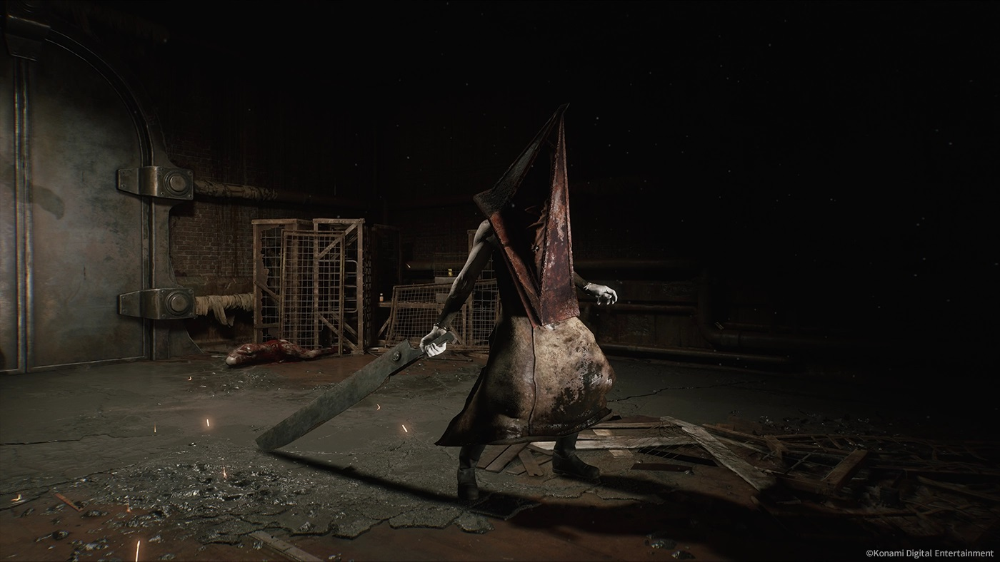
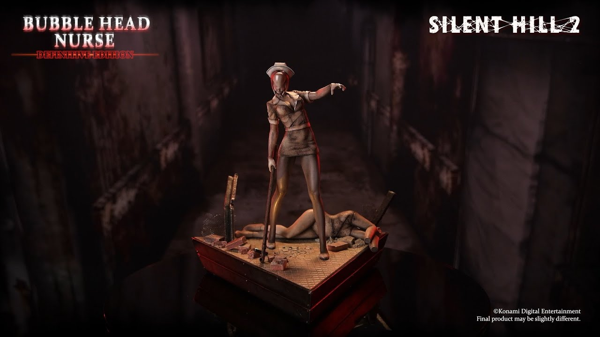
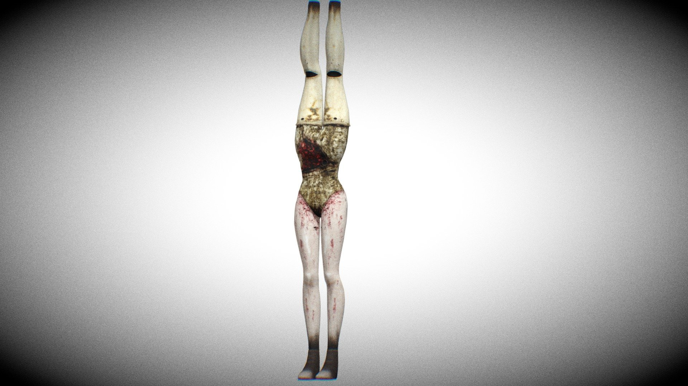
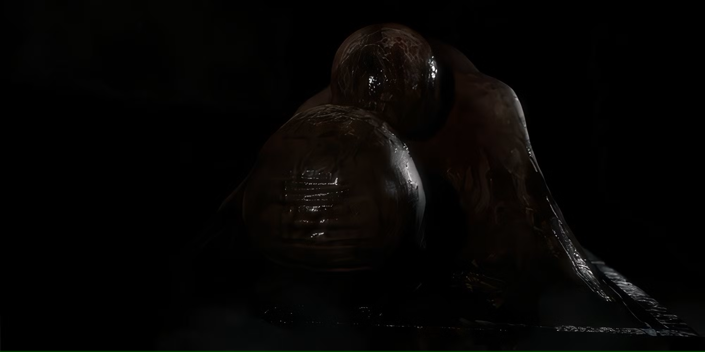
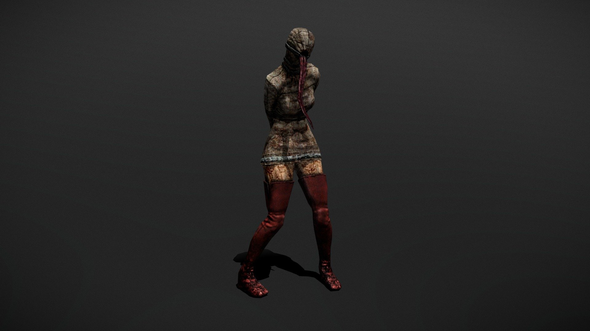
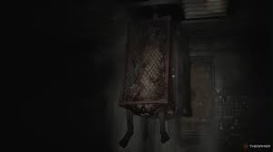

Pyramid Head
Pyramid Head es la manifestación física de la culpa y el deseo de castigo de James Sunderland. Este imponente ser persigue a James durante el juego.

Bubble Head Nurse
Las enfermeras deformes representan los deseos reprimidos de James y su culpa asociada a la muerte de Mary.

Mannequins
Los Mannequins son una representación perturbadora del deseo reprimido y la objetificación.

Abstract Daddy
Simboliza el abuso y trauma sufrido por Angela, su apariencia grotesca representa el sufrimiento psicológico.

Lying Figure
Simboliza el tormento físico y emocional que siente James, atrapado en un capullo que restringe sus movimientos.

Flesh Lips
Este monstruo representa la represión sexual y el sufrimiento mental, colgando del techo en una estructura con forma de jaula.